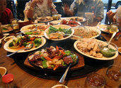

Welcome to Purely Penzance
Purely Penzance is the one stop guide to this vibrant yet historic town. Written by locals, updated regularly, independent & completely free to use. This allows us to give you an impartial and honest representation of life in the town.
Search Purely Penzance
Penzance offers a wide range of shops, from both local independent |
Eating & Drinking out (and in) Penzance Penzance had a wide variety of places to eat out and enjoy Restaurants - Takeaway Food & Menus |

 Humphry Davy Statue |
Penzance has a wide range of restaurants, cafes, pubs and takeaways. Our Wine & dine section includes contact details, web links and full menu scans - Read more |
Hotels, Guesthouses & Accommodation View our complete directory of Hotels, B&B's, Self Catering, Guest Houses and other accommodation in West Cornwall. Get full contact info & web links - Read more |
Entertainment, Live Music & Performance Find out what events are happening in Penzance. We have everything from night clubs to craft fairs & everything between - Read More |
We have endeavoured to create a complete and up to date shopping section including contact details and web links - Read More |
Tourism in Penzance & West Cornwall Find plenty of useful information in our bursting tourism section. Loads of things to do in & around Penzance + leaflets - Read More |
|
Men-a-tol, West Cornwall |
Fisherman's Statue, Newlyn |
Mine Stack |
Penzance is situated in the heart of Mount's Bay, overlooked by the beautiful St. Michael's Mount, in a natural harbour on the very Southwest tip of England, UK. The town is the tourist, economic and transport hub for West Cornwall. The road, rail and air links surrounding Penzance make it the ideal base to explore the beautiful area of Penwith, the tip of West Cornwall. With scenery ranging from wide open moorland dotted with ruined chimney stacks, to the finest beaches on offer in Britain, your sure to enjoy your visit to Penzance & West Cornwall. To find out more information on tourism in the area, suggested attractions and must see sights, be sure to visit the Purely Penzance tourism section. |